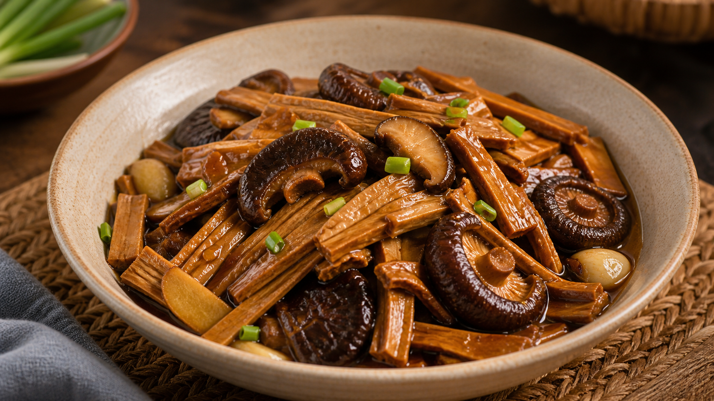
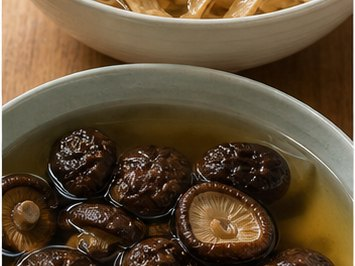
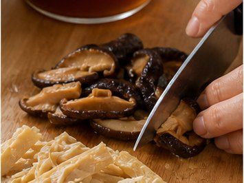
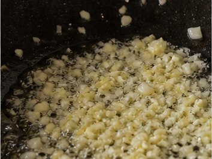
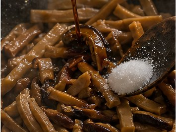
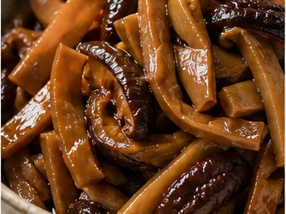

Reunion Dinner Recipe
Dried Bamboo Shoots with Mushrooms
Resilience, strength and growth

About This Dish
For some Southern and Eastern Chinese families, dried bamboo shoots and mushrooms reflect the use of preserved ingredients. These flavours can carry memories of home, especially when fresh regional ingredients are harder to find overseas.
Ingredients
- Dried bamboo shoots (150 g)
- Dried shiitake mushrooms (8-10)
- Garlic (3 cloves, sliced)
- Ginger (4 slices)
- Spring onions (2, cut into sections)
- Soy sauce
- Dark soy sauce
- Sugar
- Oil
- Water or mushroom soaking liquid (300 ml)
Method
-

Soak the dried bamboo shoots according to the packet instructions, usually overnight. Soak the dried shiitake mushrooms in warm water for 30 minutes until softened. Keep the mushroom soaking water. -

Rinse the bamboo shoots well, then cut them into strips. Slice the softened shiitake mushrooms. If the bamboo shoots are very firm, boil them for 10-15 minutes before cooking. -

Heat the oil in a wok or frying pan. Add ginger, garlic and spring onions, then fry for about 1 minute until fragrant. -

Add the bamboo shoots and shiitake mushrooms. Stir-fry for 2-3 minutes, then add 2 tbsp soy sauce, 1 tbsp dark soy sauce, sugar and mushroom soaking water. Cover and simmer for 20-25 minutes, until the bamboo shoots are tender and full of flavour. -

Remove the lid and cook for another 5 minutes until the sauce is slightly reduced. Taste and add salt if needed. Serve warm as part of a reunion dinner.
Allergens
- Soy
- May contain gluten depending on soy sauce brand
Please check product labels carefully, especially for sauces and prepared ingredients.